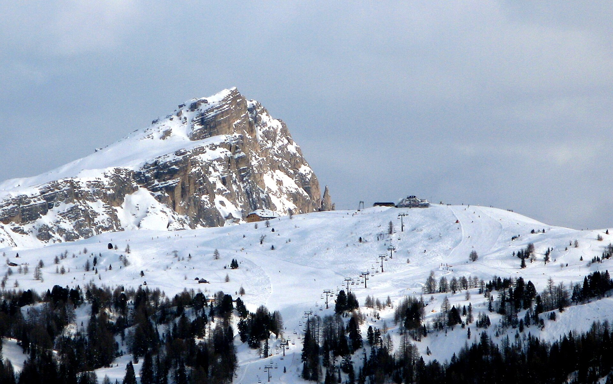

N1 · 文化完整度全家首推
西岸 Sicily × Florence
Palermo的Arab-Norman文明、Cefalù海岸与Florence文艺复兴互相呼应，城市、海、建筑、食物都有。
- 外宿
- Palermo 3 + Cefalù 2 + Florence 3
- 搬酒店
- 3处外宿基地
- 工作兼容
- 高；长活动集中在周末
- 最大取舍
- 没有高山自然章节
Route board 02 · Milan optional
释放出来的不是一晚酒店，而是一整段连续时间。两个方案都把 Sicily 放在前半程，再回 Torreglia 洗衣、工作与重装行李；工作日上午不动，长活动交给周末；后半程只选 Florence 或 Dolomites，绝不两者都塞。
N1看意大利文明的层次；N2看从地中海到阿尔卑斯的反差。


两套都先完成 Sicily，再回 Torreglia 住下、洗衣和重新装小行李；最后一段只用高铁或自驾，9/28一定回家过夜，避免9/29中午离开前还承担航班风险。
NO BACK-TO-BACK TRIPS两套都比带米兰的方案拥有更清楚的旅行主线。N1全年都相对稳；N2只有在周末上午能留给山、且山里天气好时胜出。
Palermo的Arab-Norman文明、Cefalù海岸与Florence文艺复兴互相呼应，城市、海、建筑、食物都有。
Taormina与Ortigia之后，只住Ortisei一处看Seceda和Alpe di Siusi；不是重走Cortina，也不追Lake Braies。


Palermo与Cefalù讲南意大利文明、海岸与托纳多雷式电影感，Florence讲文艺复兴；中间明确回家，不串成连续搬运。
Trade-off：自然风景不如N2极端；换来最稳定、最容易被四个人共同喜欢的一套。
打开15天安排Venice、Amarone、Palermo、Cefalù、Florence和Antinori分别代表水城、酒乡、南方文明、海岸、艺术与当代建筑酒庄；西线另有《西西里的美丽传说》让人联想到的托纳多雷式旧城光影，但不为取景地绕路。
9/24从Sicily回家，9/25上午照常工作、下午才去Florence；9/28由高铁回家，离境前不再坐飞机。
包车或指定不饮酒司机。
这是选择西岸Sicily的核心理由。
意境呼应，不把Cefalù误写成该片实拍地。
不从Sicily直接去Florence；没有合适航班就微调西西里日期。
你今年已经来过，因此不需要证明“都看过”；把最好的一馆和一片街区分享给家人。
建筑＋酒已经足够完整，不再追加第二间Chianti酒庄。



西西里东岸之后回家两晚，再只住Ortisei一处；用Seceda与Alpe di Siusi解释真正的Dolomites。
Trade-off：没有Florence；两天山上必须保护上午，并接受天气可能让Dolomites价值明显下降。
打开15天安排全程只住Ortisei，不开车追Cortina、Alta Badia和Lake Braies。Seceda是锐利山峰，Alpe di Siusi是草甸、山屋与高山生活，两天内容完全不同。
出发前约48小时看山上预报与缆车状态。若9/26–27连续降雨，整段Dolomites换成N1的Florence三晚，不改Sicily与返家节点。
包车或指定不饮酒司机。
Etna只在官方确认安全、天气与运营都理想时替换此日，不叠加。
这天的作用就是让四个人恢复；不要把它重新塞满。
不在第一天追日落观景台，也不绕Lake Braies。
爸妈可走观景短版，你们走更长一段，午餐会合。
它与Seceda不是重复景观：一个看地质戏剧感，一个看高山生活方式。
最后一晚必须在家，不从山区直接赶国际段。
N1是四套里最容易形成“完整意大利”记忆的一套。N2不是去更多山城，而是用一个Ortisei基地换两种高山体验；如果周末上午仍要工作，直接选N1。
这是路线决策稿，不是已出票行程。航班、缆车、酒庄、博物馆与司机需按最终日期和取消条款锁定。